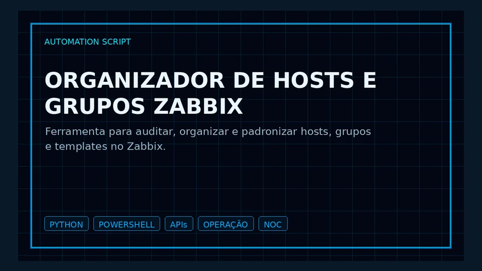
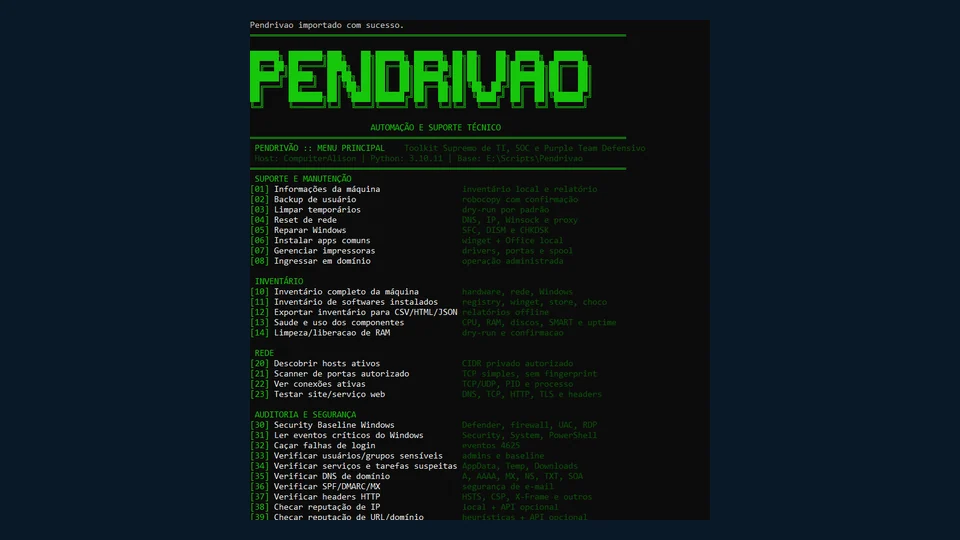

Case principal
Auditor de Backups Dropbox
Auditoria incremental de arquivos e backups de VMs armazenados.
Abrir caseCatálogo técnico
Projetos aplicados a backup, suporte, infraestrutura, monitoramento e segurança defensiva.
Auditoria incremental de arquivos e backups de VMs armazenados.
Abrir case
Auditoria e padronização de hosts, grupos, templates e dashboards.
Ver GitHub
Inventário, suporte, auditoria e resposta inicial com execução controlada.
Ver GitHub